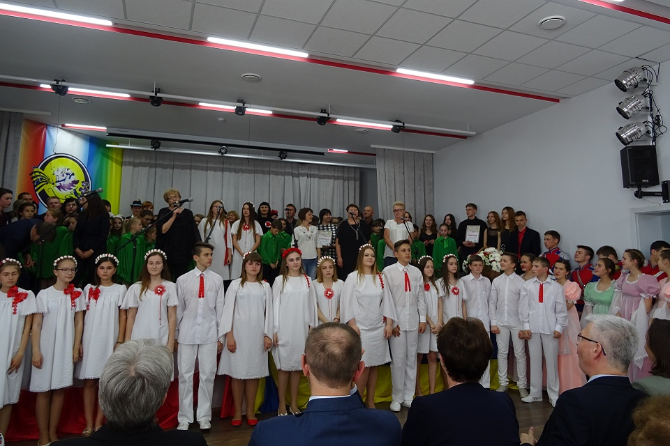

XVIII - ste Dni Kultury Polskiej w Barze w 250 - tą rocznicę zawiązania Konfederacji Barskiej
W dniach od 9-go do 14-go maja 2018 roku w Barze odbyły się XVIII Dni Kultury Polskiej. Tegoroczne obchody święta polskiej kultury nosiły szczególny charakter ze względu na 250 rocznicę zawiązania Konfederacji Barskiej – pierwszego polskiego zrywu niepodległościowego w obronie zagrożonej przez obce mocarstwa Rzeczypospolitej.
Już 9-go maja z miast partnerskich Baru – Kwidzyna i Rybnika - przybyły grupy malarzy, którzy wraz z artystami z Winnicy i Baru uczestniczyli w plenerze malarskim: „Bar – kolebką Konfederacji”. Zarówno prace będące efektem pleneru, jak i wcześniejsze, związane z tematem, obrazy miejscowych malarzy zostały wystawione w sali widowiskowej Domu Polskiego w Barze , gdzie w dniu 11 maja 2018 roku odbyła się Międzynarodowa Naukowo – Historyczna Konferencja „250 lat zawiązania Konfederacji Barskiej”.
Na konferencję i Koncert Galowy XVIII -stych Dni Kultury Polskiej w Barze przybyli między innymi: przedstawiciele Polskiego Parlamentu, Posłowie na Sejm RP – Anna Milczanowska i Ireneusz Zyska; Damian Ciarciński - Konsul Generalny RP w Winnicy; Krzysztof Łachmański – Wiceprezes Stowarzyszenia „Wspólnota Polska”; Przedstawiciele Samorządów Polskich z miast partnerskich Baru – Kwidzyna - na czele z Burmistrzem miasta Andrzejem Krzysztofiakiem, Rybnika – z Zastępcą Prezydenta miasta Piotrem Masłowskim i Starachowic - z Wicestarostą Powiatu Starachowice Markiem Pawłowskim; delegacja z miasta Nowa Sól na czele z Prezesem Fundacji Maurycego Beniowskiego – Janem Manikowskim; Joanna i Arkadiusza Skowronowie – przedstawiciele Stowarzyszenia „Rybnik – Europa”; Emilia Chmielowa – Prezes FOP na Ukrainie; Teresa Dudkiewicz – Wiceprezes FOP na Ukrainie; Maria Siwko - Dyrektor Domu Polskiego w Kijowie oraz prezesi organizacji polskich na Ukrainie i kierownicy zespołów artystycznych. Ze strony ukraińskiej uczestniczyli: Zastępca Gubernatora obwodu winnickiego Oleksander Wasiliewicz Kuczeriuk i Mer miasta Bar – Artur Cyciurski.
Konferencję poprzedziło odsłonięcie tablicy upamiętniającej 250 – tą rocznicę zawiązania Konfederacji Barskiej. Po krótkiej przedmowie Heleny Czerniak – Prezesa Barskiego Rejonowego Kulturalno – Oświatowego Stowarzyszenia Polaków im. Konfederatów Barskich, odsłonięcia tablicy dokonali przedstawiciele Polskiego Parlamentu – Anna Milczanowska i Ireneusz Zyska jak również Konsul Generalny RP w Winnicy Damian Ciarciński, Wiceprezes Stowarzyszenia „Wspólnota Polska”Krzysztof Łachmański i Mer miasta Bar Artur Cyciurski . Poświęcenia nowoodsłoniętej tablicy dokonał Jego Eminencja Biskup Odesko Semferopolski Stanisław Biernacki.
Pierwsza część konferencji poświęcona była Konfederacji Barskiej w kontekście naukowym i historycznym. Referat inauguracyjny wygłosił profesor doktor habilitowany Uniwersytetu Opolskiego Tomasz Ciesielski. Następnie kolejno zabierali głos kandydaci nauk historycznych: Anatol Łysy, Anatol Wojnarowski, Konstanty Zawalniuk oraz kierownik wydziału ogólnoświatowego Barskiego Kolegium Humanistycznego Jurij Malinowski. Ksiądz Jan Ślepowroński – proboszcz parafii św. Antoniego w Wińkowcach opowiadał o księdzu Marku Jandołowiczu – kultowej postaci czasów Konfederacji Barskiej.
Druga część konferencji poświęcona była osobie Maurycego Beniowskiego – uczestnika Konfederacji Barskiej, podróżnika, kartografa, władcy Madagaskaru, bohatera utworów Juliusza Słowackiego i Adama Mickiewicza. Tę część konferencji rozpoczęło odsłonięcie popiersia Beniowskiego ufundowanego przez Fundację im. Maurycego Beniowskiego z Nowej Soli. Odsłonięcia dokonali: Prezes Fundacji Jan Manikowski, Prezes Barskiego RKOSP Helena Czerniak oraz Dyrektor Domu Polskiego Małgorzata Miedwiediewa.
Referaty związane z kluczową postacią wygłosili: doktor nauk historycznych Siergiej Galczak, który przybliżył zebranym barwny życiorys Beniowskiego; historyk i dziennikarz Krzysztof Jóżwiak, który szczegółowo zajął się drogą i pobytem zesłańca na Kamczatce; profesor doktor habilitowany Uniwersytetu Szczecińskiego Radosław Skrycki wygłosił referat „Maurycy Beniowski jako geograf i kartograf” zaś panie Dorota Gazicka – Wójtowicz i Grażyna Dudzicka mówiły na temat ucieczki Beniowskiego z Kamczatki i jego odkrywczym rejsie po północnym Pacyfiku w świetle rękopiśmiennej mapy odnalezionej w zbiorach Biblioteki Instytutu Geografii i Przestrzennego Zagospodarowania Polskiej Akademii Nauk. Na zakończenie głos zabrał Prezes Fundacji Jan Manikowski, który odczytał referat belgijskiego profesora Jean – Marie Meskensa „Wybrane epizody z życia Maurycego Beniowskiego”.
Konferencję zakończył fragment sztuki teatralnej przedstawiający epizod z życia Maurycego Beniowskiego oraz zaproszenie na dziedziniec Domu Polskiego, gdzie na dużej ogrodowej szachownicy zaprezentowany został słynny mat Beniowskiego.
Pracowity dzień zakończyło wspólne spotkanie przy szwedzkim stole.
W sobotę – 12 maja o godzinie 14.00 rozpoczął się Koncert Galowy XVIII - stych Dni Kultury Polskiej, który został poprzedzony złożeniem kwiatów na mogile żołnierzy Józefa Piłsudskiego poległych na tych ziemiach w 1920 roku oraz u stóp pomnika ofiar reżimu stalinowskiego na cmentarzu katolickim w Barze.
Na sali widowiskowej przybyłych gości powitała Dyrektor Domu Polskiego Małgorzata Miedwiediewa, która zwróciła uwagę na odmienny – bo związany z 250-tą rocznicą zawiązania Konfederacji Barskiej – bardziej patriotyczny charakter tegorocznego koncertu. Podkreśliła również, że choć w historii Polski i Ukrainy były momenty bohaterskich wzlotów i tragicznych upadków, to jednak współcześnie oba narody powinny budować nową rzeczywistość w myśl hasła „Podajcie , bracia, dłonie” – „Jednajmy się bracia”.
Koncert rozpoczął krótki film dokumentalny poświęcony Konfedeacji Barskiej, po czym widzowie mogli usłyszeć piękną recytację fragmentu dramatu Juliusza Słowackiego „Ksiądz Marek” w wykonaniu Wadima Marymuchy. Oprócz występów zespołów gospodarzy – tanecznego – „Aksamitki”, który wykonał poloneza kontuszowego, taniec biłgorajski i mazura oraz chórów „Cantica Anima” („Preludium” i polonez ze suity Andrzeja Cwojdzińskiego „Szopeniada”), „ Młode Liście” („Dumka” i „Krajka”) oraz „Młode Listki” („Ja jestem”), koncert uświetniły występy zespołów, które przybyły z różnych stron Ukrainy. Gośćmi Domu Polskiego były w tym roku zespoły z Żytomierza („Koroliski”), Choroszowa („Kolorowe Ptaszki”), Browarów („Wszystko w Porządku”), Winnicy(„Srebrne Głosy”), Czerniowiec („Kwiat Bukowiny”), Pietrowiec Dolnych(„Wianeczek”), Koziatynia(„Podolskie Świderki”). Centralną częścią koncertu był reczital gości z Polski – rybnickiego chóru młodzieżowego „Bell Canto” pod dyrekcją pani Lidii Blązel – Marszolik.
Koncert Finałowy tegorocznych Dni Kultury Polskiej zakończył się jak zwykle wspólnym odśpiewaniem „Hymnu chórów polonijnych” , którego pierwsze słowa – „Podajcie Bracia dłonie” - stanowią motto Dni Kultury Polskiej w Barze.
Ostatnim punktem sobotniego programu było ognisko integracyjne w miejscowości Mytki niedaleko Baru, gdzie zarówno młodzież jak i dorośli uczestnicy spotkania bawili się przy ognisku do póżnych godzin wieczornych.
Ostatnim akcentem wydarzenia było wspólne uczestnictwo gości i gospodarzy wydarzenia w uroczystej mszy świętej w Kościele św. Anny w Barze.
Zorganizowanie święta polskiej kultury nie byłoby możliwe bez pomocy i zaangażowania Senatu RP oraz Konsulatu Generalnego RP w Winnicy, za co serdecznie dziękujemy.
Wideo
To wydarzenie na stronach internetowych
slowopolskie.org • www.echodnia.eu • Głos Polonii TV